Progress report 2022/03
Steffen Mühle
email: steffen.muehle@ds.mpg.de
Heidemann group, Max-Planck Institute for Dynamics and Self-Organization, Göttingen
|
|


|
\[ \begin{aligned} \langle Z\rangle&=\sum_{z}z\,p(z)\\ &\fragapply{fragment 3}{=\sum_{z}z\sum_{y}p(z|y)p(y)}\\ &\fragapply{fragment 4}{=\sum_{z}z\sum_{y}p(z|y)\sum_{x}p(y|x)p(x)}\\ &\fragapply{fragment 5}{=\dots} \end{aligned} \] |
| 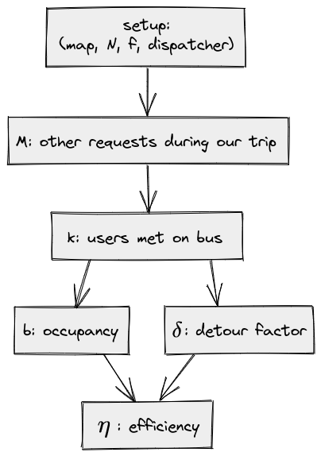 | \[ \begin{aligned} \langle\eta\rangle=\int\,\text{d}\eta\,\eta\underbrace{\sum_{k}\color{blue}{p(\eta|k)}\underbrace{\sum_M\color{red}{p(k|M)}\,\color{green}{p(M|f)}}_{p(k)}}_{p(\eta)} \end{aligned} \] \[ \begin{aligned} &\fragapply{fragment 1}{\color{green}{p(M|f)}=e^{-\Lambda}\dfrac{\Lambda^M}{M!}\quad\text{ where }\Lambda=f\cdot T\Rightarrow\langle M\rangle\propto f}\\ &\fragapply{fragment 2}{\color{red}{p(k|M)}:\,\,\text{insertion model}}\\ &\fragapply{fragment 3}{\color{blue}{p(\eta|k)}:\,\,\text{ellipse model}} \end{aligned} \] |
|
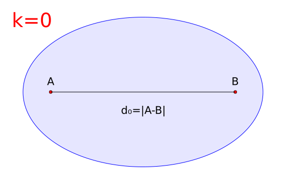
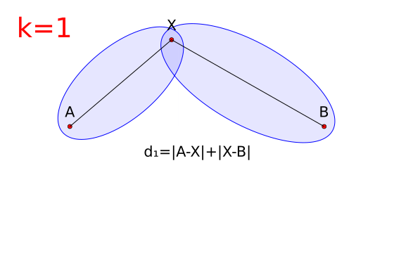
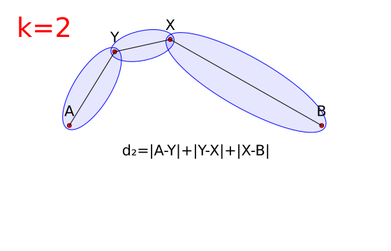
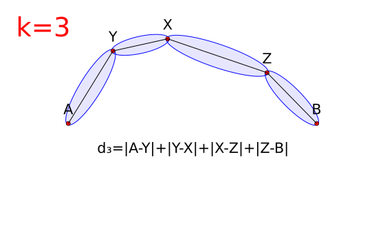
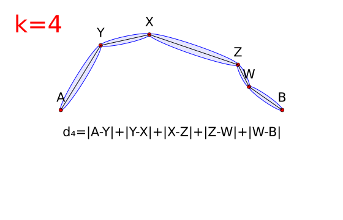
|
\[ \eta_k=\frac{b_k}{d_k/d_0}\\ b_k=1+\dfrac{k}{2}\\ d_k\rightarrow d_\text{max} \] |
|
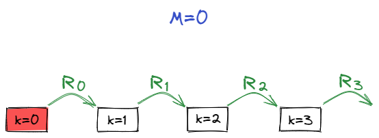
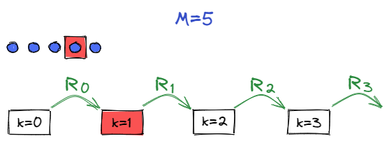
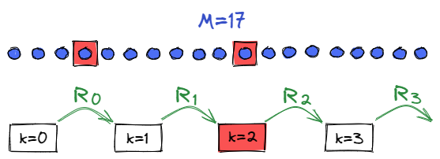
| 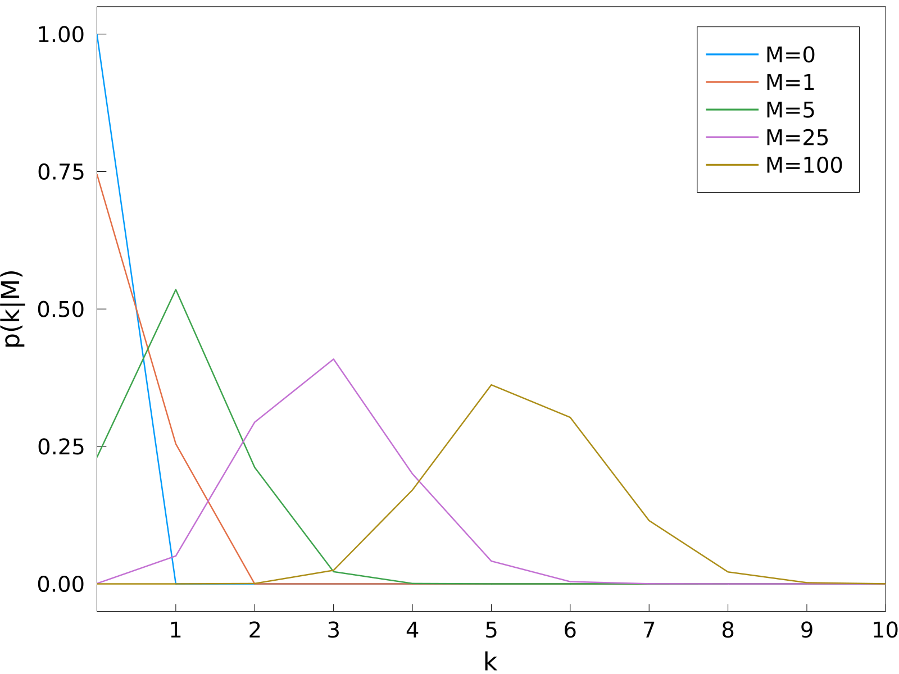 |
| 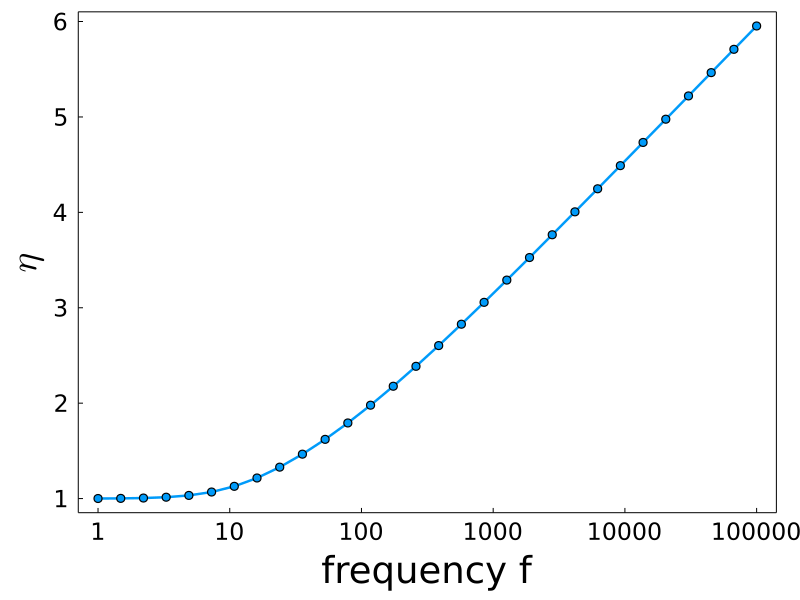 | 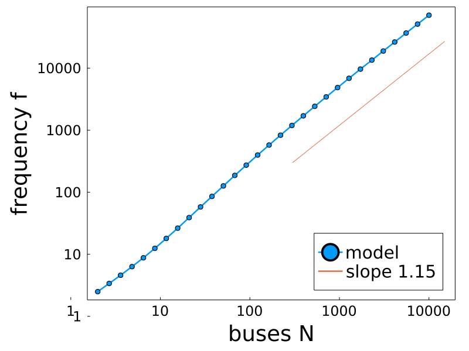 |
Scaling origin
\[\fragapply{fragment 1}{f\propto\eta\cdot N}\\ \fragapply{fragment 2}{\eta=\dfrac{b}{\delta}\sim b\propto k}\\ \fragapply{fragment 3}{f\sim M\sim R_{k}^{-1}\sim c^{k}}\\ \fragapply{fragment 4}{\Leftrightarrow\quad k\sim\log(f)}\\~\\ \fragapply{fragment 5}{\Rightarrow f\propto\log(f)\cdot N}\\~\\ \fragapply{fragment 6}{R_k\text{ dictates scaling properties}}\]
Comparing maps
| 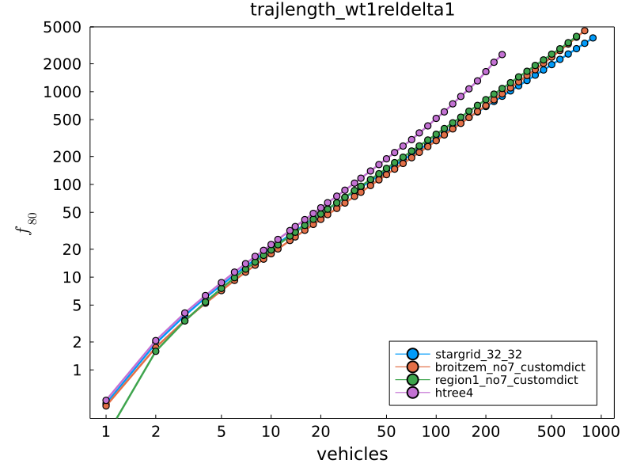 |
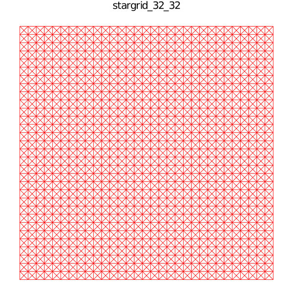
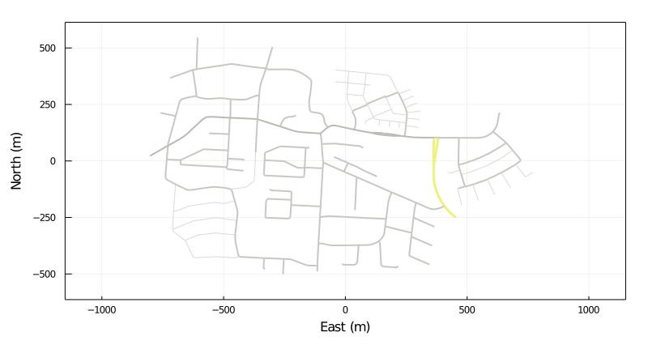
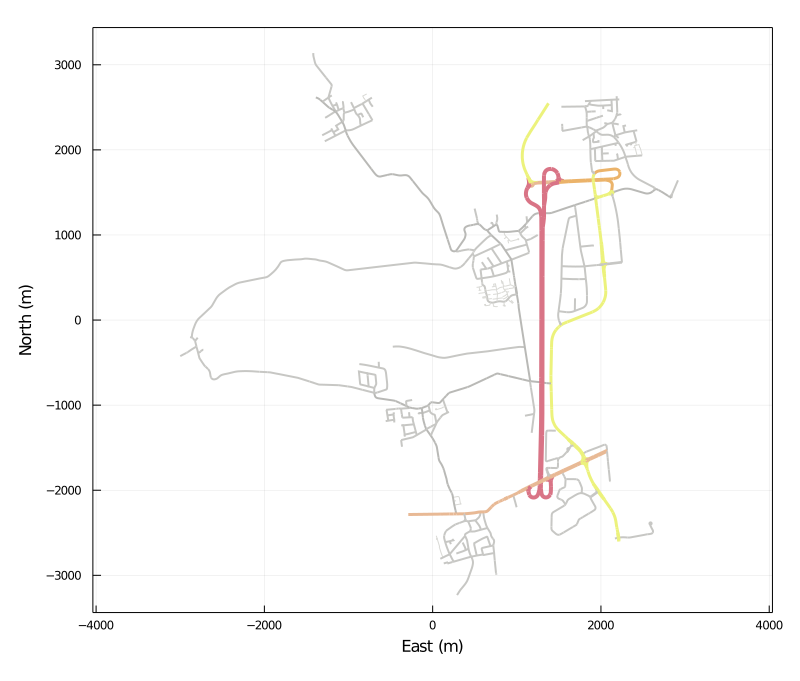
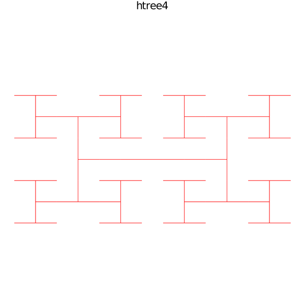
|
Scaling origin
\[f\propto\eta\cdot N\\ \eta=\dfrac{b}{\delta}\sim b\propto k\\ f\sim M\sim R_{k}^{-1}\sim \color{red}{\text{const.}}\\ \Leftrightarrow\quad k\sim a+b\,f\\~\\ \Rightarrow f\propto(a+b\,f)\cdot N\\ \fragapply{fragment 1}{\Leftrightarrow\quad f=\dfrac{aN}{1-bN}}\]